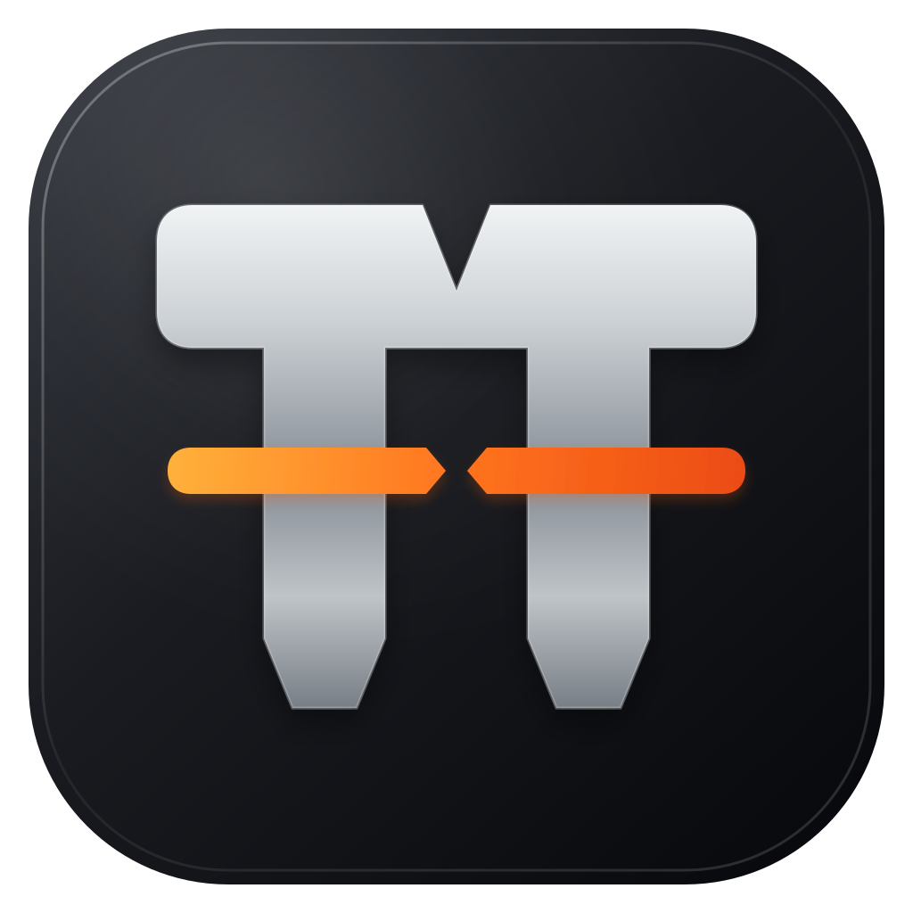
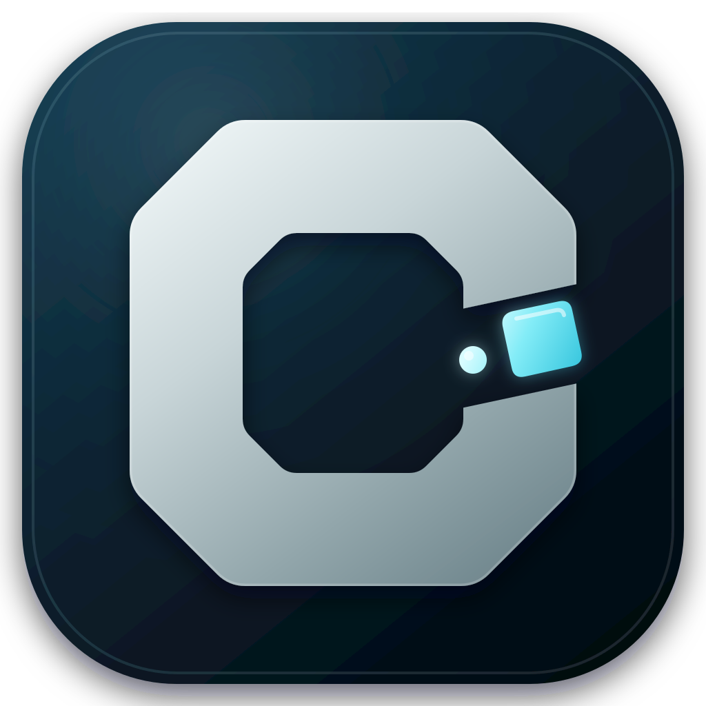
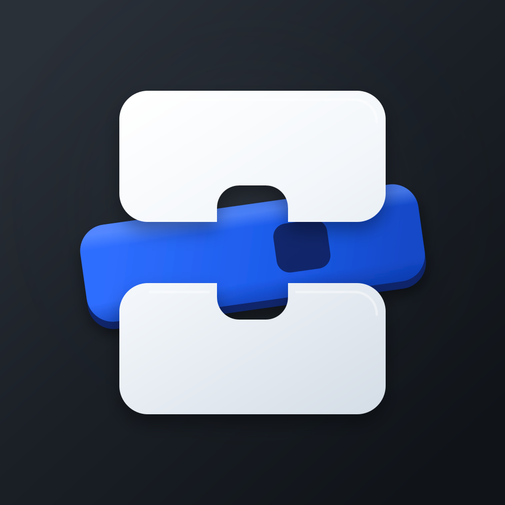

TT Gate计时门 · 品牌识别优先

TrainTimer
Scale & grayscale stress test
64
32
16
mono
- 核心
- 双 T、起跑门、分段信号
- 优势
- 品牌化最强，适合长期扩展
- 需警惕
- 避免铁路、服装或普通字母商标联想
TrainTimer · Logo exploration 01
三案统一采用正面构图、单一信号色和最多三层的 macOS 26 图标语法。请先看图形本身与 32px 表现；材质、配色和字标都可以在下一轮交叉组合。

Scale & grayscale stress test

Scale & grayscale stress test

Scale & grayscale stress test